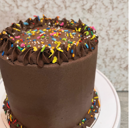

Descripción
El proyecto "Gelato y Postres" es una plataforma de e-commerce diseñada para ofrecer a los clientes una experiencia óptima y cómoda al explorar un catálogo variado de productos y personalizar sus pedidos. Nacido de la necesidad de mejorar el proceso de compra que previamente se realizaba a través de Instagram, este e-commerce busca resolver las limitaciones de la red social y proporcionar una interfaz amigable y funcional para los usuarios.


